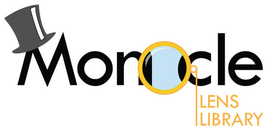

Система типов Scala
в прикладных задачах
Мартин Одерски
“Мартин Одерски (Martin Odersky, 1958) — немецкий учёный в области компьютерных наук и профессор EPFL в Швейцарии.
Специализируется на статическом анализе кода и языках программирования. Разработал Scala, поддержку Generics в Java, создал текущую версию javac.
В 2011 стал сооснователем Typesafe, компании, которая ставит своей целью поддержку и популяризацию языка Scala.”
(Википедия)
Зачем вообще нужны развитые типы?
- валидация кода на этапе компиляции. Доказательство программы
- Сохранение валидности кода в ходе рефакторинга/развития программы
- Поддержка intelli sense
- На типах тоже можно программировать ;)
Некоторые особенности системы типов Scala
- generic'и с ко- и контра- вариантностью
- implicit-параметры, выбираемые компилятором на основе типов
- вычисления на типах, включая
- alias'ы типов
- type lambda
- конструкторы типов (типы высших порядков)
- рекурсивные типы
- existential-типы
Вычисления на типах
- Boolean на типах
- type-lambda ( type |-\|[T] = { type lambda[U] = U<:!<T } - type alias for context bound )
- пример перехода от типов к значениям через implicit'ы
представление Boolean в пространстве типов
sealed trait Bool
sealed trait True extends Bool
sealed trait False extends Bool
Виды использования типа Bool
type If[Bool, IfTrue, IfFalse] = ??? // проверка условия
type &&[Bool, Bool] = ??? // And
type ||[Bool, Bool] = ??? // Or
type Not[Bool, Bool] = ??? // Not
Как реализовать?
Всё можно реализовать через ветвление
sealed trait Bool {
type Branch[T,F]
}
sealed trait True extends Bool {
type Branch[T,F] = T
}
sealed trait False extends Bool {
type Branch[T,F] = F
}
т.е. для двух потомков есть две разные реализации типа
Чтобы облегчить жизнь компилятору, добавляют ещё один параметр UpperBound для T и F
type Branch2[T<:Upper,F<:Upper,Upper]
Остальные типы-функции:
type &&[A<:Bool, B<:Bool] = A#Branch[B,False]
type ||[A<:Bool, B<:Bool] = A#Branch[True,B]
type Not[A<:Bool] = A#Branch[False,True]
Как превратить тип в значение?
case class TypeConverter[A,B](value:B)
implicit def booleanOfType[A](implicit tc:TypeConverter[A,Boolean]) = tc.value
implicit val trueConverter = TypeConverter[True,Boolean](true)
Пример использования (в качестве фантомного типа)
case class Service[Started<:Bool](name:String, resources:Any)
def start(service:Service[False]) = service.copy(resources = Some('resource)).asInstanceOf[Service[True]]
def stop(service:Service[True]) = service.copy(resources = None).asInstanceOf[Service[False]]
Как сравнить типы на равенство?
val evidenceThatIntEqualsAny = implicitly[Int =:= Any] // error
val evidenceTrue = implicitly[(True || False) =:= True] // exists
val evidenceLong = implicitly[False#Branch[Int,Long] =:= Long] // exists
наследование?
val evidenceThatIntExtendsAny = implicitly[Int <:< Any] // exists
val `evidence that Int is autocovertable to Long` = implicitly[Int <%< Long] // exists
Cake pattern
package types
/** Часть схемы БД.*/
trait DbSlice {}
/** Часть схемы, относящейся к сущности "Продукт". */
trait ProductDb extends DbSlice {
case class Product(name:String)
val products = TableQuery[...]
}
trait ProductSupport {
type Database <: ProductDb
val database:Database
def newProduct(name:String) = database.Product(name)
}
class AllDb extends ProductDb
object MyApp extends App with ProductSupport {
type Database = AllDb
val database = new AllDb
println(newProduct("hello"))
}
class ProductTest {
test("products"){
val db = new ProductDB{}
val app = new ProductSupport {
type Database = ProductDb
val database = db
}
app.newProduct("00").name should be "00"
}
}
Code syntax highlighting courtesy of highlight.js.
abstract class Exp[A] {
def eval = this match {
case LitInt(i) => i
case LitBool(b) => b
case Add(e1, e2) => e1.eval + e2.eval
case Mul(e1, e2) => e1.eval * e2.eval
case Cond(b,thn,els) => if ( b.eval ) { thn.eval } else { els.eval }
case Eq(e1,e2) => e1.eval == e2.eval
}
}
case class LitInt(i: Int) extends Exp[Int]
case class LitBool(b: Boolean) extends Exp[Boolean]
case class Add(e1: Exp[Int], e2: Exp[Int]) extends Exp[Int]
case class Mul(e1: Exp[Int], e2: Exp[Int]) extends Exp[Int]
case class Cond[A](b: Exp[Boolean], thn: Exp[A], els: Exp[A]) extends Exp[A]
case class Eq[A](e1: Exp[A], e2: Exp[A]) extends Exp[Boolean]
GADT example courtesy of Haskell GADTs in Scala, Sean Seefried.
К сожалению, не компилируется...
object Exp {
def evalAny[A](e: Exp[A]): A = e match {
case LitInt(i) => i
case LitBool(b) => b
case Add(e1, e2) => e1.eval + e2.eval
case Mul(e1, e2) => e1.eval * e2.eval
case Cond(b, thn, els) => if (b.eval) { thn.eval } else { els.eval }
case Eq(e1, e2) => e1.eval == e2.eval
}
}
abstract class Exp[A] {
def eval: A = Exp.evalAny(this)
}
case class LitInt(i: Int) extends Exp[Int]
case class LitBool(b: Boolean) extends Exp[Boolean]
case class Add(e1: Exp[Int], e2: Exp[Int]) extends Exp[Int]
case class Mul(e1: Exp[Int], e2: Exp[Int]) extends Exp[Int]
case class Cond[A](b: Exp[Boolean], thn: Exp[A], els: Exp[A]) extends Exp[A]
case class Eq[A](e1: Exp[A], e2: Exp[A]) extends Exp[Boolean]
Здесь компилятор вызывает метод с уже известным generic-параметром.
Линзы и другая оптика (Iso, Prism, Getter/Setter)
- Модификация немодифицируемых объектов.
- Конструируем новый объект, в котором изменена какая-то часть.
- Композиция линз позволяет модифицировать вложенные элементы сложных объектов.
Базовые типы: Getter
type Getter[A,B] = A => B
Просто извлекает из переданного объекта какое-то значение. Примером может служить функция, возвращающая значение свойства объекта.
case class Street(name: String, ...)
def nameGetter = (s:Street) => s.name
Базовые типы: Setter
type Setter[A,B] = A => B => A
Это более хитрый тип. Принимает по сути два параметра. Объект, внутри которого надо что-то изменить, и новое значение. Пример - функция, конструирующая новый объект с изменённым свойством.
def nameSetter = (s:Street) => (newName:String) =>
s.copy(name = newName)
Использование:
val street = Street("Вишнёвая", ...)
val streetModified = nameSetter (street)("Яблочная")
assert(nameGetter(streetModified) == "Яблочная")
Линза = Getter + Setter
case class Lens[A,B](get:Getter[A,B])(set:Setter[A,B])
Пара функций, объединённых в один объект.
val nameLens = Lens[Street, String](_.name)(s => n => s.copy(name = n))
или
val nameLens = GenLens[Street](_.name)
Big deal?
Композиция линз
def compose[A,B,C](l1:Lens[A,B], l2:Lens[B,C]):Lens[A,C] =
Lens(l1.get andThen l2.get)(???)
def compose[A,B,C](l1:Lens[A,B], l2:Lens[B,C]):Lens[A,C] =
Lens(l1.get andThen l2.get)(a => c => l1.set(a,l2.set(l1.get(a))(c)))
Композиция линз оправдывает их существование
case class Address(street: Street, ...)
val streetLens = Lens[Address, Street](_.street)
(a => s => a.copy(street = s))
val nameOfAddressLens = streetLens composeLens nameLens
Why do I need this?
Lens examples courtesy of Monocle, Julien Truffaut.
Scala already provides getters and setters for case classes but modifying nested object is verbose which makes code difficult to understand and reason about. Let's have a look at some examples:
case class Street(name: String, ...) // ... means it contains other fields
case class Address(street: Street, ...)
case class Company(address: Address, ...)
case class Employee(company: Company, ...)
Let's say we have an employee and we need to set the first character of his company street name address in upper case. Here is how we could write it in vanilla Scala:
val employee: Employee = ...
employee.copy(
company = employee.company.copy(
address = employee.company.address.copy(
street = employee.company.address.street.copy(
name = employee.company.address.street.name.capitalize // luckily capitalize exists
)
)
)
)
As you can see copy is not convenient to update nested objects as we need to repeat at each level the full path to reach it. Let's see what could we do with Monocle:
val _name : Lens[Street , String] = ... // we'll see later how to build Lens
val _street : Lens[Address , Street] = ...
val _address: Lens[Company , Address] = ...
val _company: Lens[Employee, Company] = ...
(company composeLens address composeLens street composeLens name).modify(_.capitalize)(employee)
// you can achieve the same result with less characters using symbolic syntax
(company ^|-> address ^|-> street ^|-> name).modify(_.capitalize)(employee)
ComposeLens takes two Lens, one from A to B and another from B to C and creates a third Lens from A to C. Therefore, after composing company, address, street and name, we obtain a Lens from Employee to String (the street name).
Создание линз
- Вручную
- Black box макрос для каждого свойства case class'а
- White box макрос для целого case class'а
val _name1 = Lens[Street, String](_.name)(s => n => s.copy(name = n))
val _name2 = GenLens[Street](_.name)
@Lenses
case class Street(name:String,...)
// val _name3 = Street.name
Iso
- Линзы фокусируются на части объекта
- Изоморфизмы Iso - конвертируют одну форму данных в другую и обратно.
- Важно! Взаимно-однозначное соответствие.
- Для изоморфизмов также есть композиция. Выражает последовательную композицию нескольких конвертаций.
Типы :
val addressToJsonIso: Iso[Address, JsValue] = ...
val jsValueToString = Iso[JsValue,String](_.toString)(JSON.parse)
val addressToStringIso = addressToJsonIso composeIso jsValueToString
Пример использования
val addr = Address(Street("Каштановая"))
val json = addressToStringIso.get(addr)
// .. send receive
val addr2 = addressToStringIso.reverseGet(json)
assert(addr === addr2)
Типизированные Map'ы
- Отношение между объектом и значением его свойства
type Relation[A,B] = ... // like Lens[A,B]
object Street {
val name:Relation[Street,String] = ???
}
type RelationTypeClass[R] = ...
def getter[A,B,R<:Relation[A,B]](rel:Relation[A,B])(implicit rtc:RelationTypeClass[R]):A => B = a=>rtc.get(a,rel)
- Хранение данных не в case-class'ах
- Создаём map ключ-значение. В качестве ключа - типизированный идентификатор Relation[A,B], например,
case class RelationId[A,B](name:String)(implicit val typeTag:TypeTag[B]){
type RType = B // тип для повторного использования
}
case class TypedMap[E](map:Map[RelationId[A,_], _]) // условно
- Создаём фантомный тип Street и несколько свойств-отношений:
abstract final class Street
object Street {
val name = RelationId[Street,String]("name")
}
Фантомные типы
- Отдельная независимая иерархия(решётка наследования), которую легко наблюдать
- Возможность произвольного распределения свойств между классами предметной области. Достаточно выбрать набор trait'ов, к которым будут привязаны свойства.
Обособленные отношения/атрибуты
- Повторное использование свойств для любых объектов
- Повторное использование типов, объявленных в единственной точке
- Нет привязки к способу хранения данных. Данные можно представлять в модели, в таблице БД, в интерфейсе совершенно по-разному.